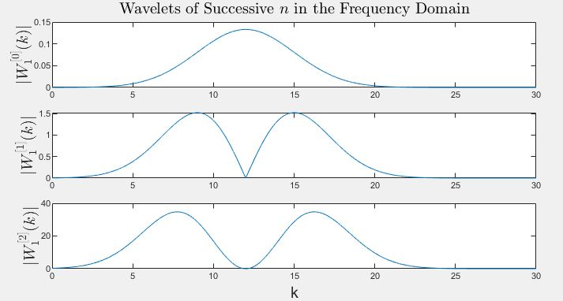

$$\textbf{Introduction}$$
Define a musical sound $s(t)$ as a sound that may be modeled with little error by a low number $L$ of discrete frequencies $f_{l}$ with respective amplitude contours $A_{l}(t)$:
$$s(t) \approx \sum_{l=1}^{L}A_{l}(t)\sin(2\pi f_{l}t). \tag{1.}$$
Most musical instruments, including notes of the piano, flute, clarinet, and tuba among others, create such musical sounds. Other instruments, mainly percussive, do not
create musical sounds as defined.
Given any musical sound here we present an algorithm for modeling it according to the approximation of
(1.). This algorithm can be described roughly by
the following two-step process:
- pass our musical sound through parallel band-pass filters to isolate prominent frequencies
- pass the output bands through respective sinusoidal amplitude contour filters (adapted moving average filters).
For conciseness we will formulate our theory
from a continuous-time lense, however, please note that sampled sounds are necessarily discrete-time. This algorithm must be transcribed into such a framework in order
to implement it on real-world signals.
$$\textbf{General Theory}$$
In order to begin, we must define two standard integral transforms that are used heavily in signal processing, and likewise are used heavily here.
We define the convolution of any two arbitrary signals $x(t)$ and $y(t)$ as
$$ x(t) * y(t) = \int_{-\infty}^{\infty}x(\tau)y(t-\tau) \, \mathrm d\tau. \tag*{}$$
We define the Fourier transform pair of any arbitrary signal $x(t)$ as
$$ \begin{align} X(k) &= \mathcal{F}_{t}\left[x(t)\right](k) = \int_{-\infty}^{\infty}x(t)e^{-2\pi i kt} \, \mathrm dt \\
x(t) &= \mathcal{F}_{k}^{-1}\left[X(k)\right](t) = \int_{-\infty}^{\infty}X(k)e^{2\pi i kt} \, \mathrm dk \end{align} \tag*{} $$
where we have that $ x(t) * y(t) = \mathcal{F}_{k}^{-1}\left[X(k)Y(k)\right](t) $ by the convolution theorem.
$$\textbf{Band Isolation}$$
In order to isolate any frequency band about $f_{l}$ within $s(t)$, we convolve a specified wavelet $w_{l}^{[n]}(t)$ with $s(t)$ defined via
$$ w_{l}^{[n]}(t) = \frac{\mathrm d^n}{\mathrm d t^n}\left[e^{-\frac{1}{2}\pi^2\beta^2t^2}\right]e^{2\pi if_{l}t} \tag*{}$$
where $\beta=2\sigma$ is interpreted as frequency domain bandwidth (with $\sigma$ being standard deviation). The given wavelet choice is based off the Gaussian wavelet in order to provide smooth
mediation between time and frequency resolution. Furthermore, by taking $n=0,1,2,\ldots$ fixed derivatives of the Gaussian,
we are able to model levels of transience within any given band of $s(t)$ because in the frequency domain this will place an $n^{th}$-degree zero at $f_{l}$ with successively widening poles symmetric about $f_{l}$.
In the frequency domain, our wavelet takes the following closed form:
$$ \mathcal{F}_{t}\left[w_{l}^{[n]}(t)\right](k) = W_{l}^{[n]}(k) = \sqrt{\frac{2}{\pi}}\frac{1}{\beta}\left(2\pi i \left(k-f_{l}\right)\right)^ne^{-\frac{2}{\beta^2} (k-f_{l})^2}. \tag*{} $$

Unnormalized wavelet filter shapes as viewed in the frequency domain. Here, arbitrarily $l=1$, $\beta = 6$, $f_{1} = 12$.
We refer to $w_{l}^{[n]}(t)$ as a Hermite Gaussian wavelet because successive Gaussian derivatives can be composed of the Gaussian itself
multiplied by successive Hermite polynomials. Then, our filtered output $r_{l}^{[n]}(t)$ is given as
$$ r_{l}^{[n]}(t) = \frac{2}{\max\left(\left|W_{l}^{[n]}(k)\right|\right)}\mathrm{Re}\left[s(t)*w_{l}^{[n]}(t)\right] \tag*{} $$
where the normalization factor is such to make the filter gainless.
$$\textbf{Amplitude Extraction}$$
We now are ready to determine our amplitude contour $A_{l}^{[n]}(t)$. To do this, we define a step-like function $u_{l}(t)$ as
$$ u_{l}(t) = \begin{cases}1, & 0 \leq t < 1/f_{l} \\ 0, & \text{otherwise} \end{cases} \tag*{} $$
and then we simply have
$$ A_{l}^{[n]}(t) = \frac{\pi f_{l}}{2}\left|r_{l}^{[n]}(t)\right| * u_{l}(t) \tag*{} $$
where we interpret the above convolution as an adapted moving average filter.
$$\textbf{Model}$$
Defining $\tilde{s}^{[n]}(t)$ as the musical sound's model, we may conclude that
$$\tilde{s}^{[n]}(t) = \sum_{l=1}^{L}A_{l}^{[n]}(t)\sin(2\pi f_{l}t) \tag*{} $$
where we understand that $\tilde{s}^{[0]}(t)$ is sufficiently similar to the original musical sound $s(t)$, and that for successive $n=1,2,3\ldots$ we are reconstructing the transient areas of the
musical sound.